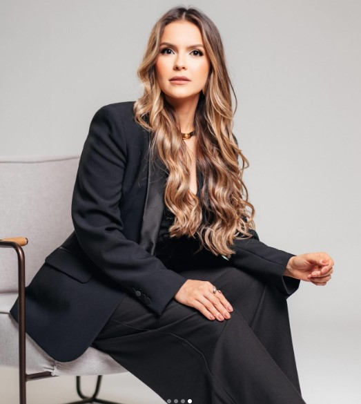

Por trás de cada sobrenome há uma história. Por trás de cada história, há uma especialista. E juntas, criamos soluções que fazem a diferença.
Fale conoscoDesde 2023
O Escritório
Somos um escritório de advocacia que oferece uma atuação jurídica ampla, integrada e estratégica. Atuamos em diversas áreas do Direito, incluindo Direito Trabalhista, Cível, Empresarial, de Família, Previdenciário e outras, sempre com o compromisso de compreender cada questão em sua totalidade e buscar a solução adequada para cada cliente. Acreditamos que o Direito deve ser compreendido de forma ampla e interligada. Por isso, nossa atuação não se limita a uma única área jurídica: analisamos cada demanda sob diferentes perspectivas, identificando os aspectos relevantes e construindo estratégias que estejam alinhadas aos objetivos de nossos clientes. Essa atuação multidisciplinar nos permite oferecer soluções completas, especialmente em situações que envolvem diferentes áreas do Direito e exigem uma análise conjunta de seus diversos aspectos. Dessa forma, buscamos aliar conhecimento jurídico, planejamento e atuação estratégica para alcançar resultados eficientes, seguros e adequados às necessidades de cada cliente.
Atuamos em todo o Brasil, de forma presencial e digital, com sede física em Montes Claros – MG.
Juntas, unimos conhecimento, experiência e dedicação para proteger seus direitos e impulsionar seus objetivos. Conte com a Leal Souto e Carvalho para soluções jurídicas seguras e personalizadas.
Quem somos
As Sócias
Leal
Dra. Camila Araújo Leal
OAB/MG 215.768
Respeito é a base de qualquer relação. À frente de Direito Empresarial, Direito Trabalhista e Direito Previdenciário, Dra. Camila garante compromisso e excelência em cada detalhe.
- Direito Empresarial
- Direito Trabalhista
- Direito Previdenciário
Souto
Dra. Roberta Mariana Souto Mendes
OAB/MG 177.269
Estratégia e inovação elevam qualquer negócio. Em Direito Trabalhista e Empresarial, Direito de Família e Sucessões, Dra. Roberta transforma desafios em crescimento.
- Direito Trabalhista
- Direito Empresarial
- Direito de Família e Sucessões

Carvalho
Dra. Renata Rosa de Carvalho Nobre
OAB/MG 163.487
Raízes fortes e crescimento sólido. A atuação da Dra. Renata em Previdenciário, Trabalhista e Indenizações é marcada por planejamento e execução certeira.
- Direito Previdenciário
- Direito Trabalhista
- Indenizações
Time
Nossa Equipe
Advogado Associado
Dr. Ramon Librelon Pinheiro Lopes
OAB/MG
- Direito Trabalhista
- Direito Empresarial
- Direito de Família e Sucessões
Advogada Associada
Dra. Josiane Oliveira Araújo
OAB/MG 192.516
- Direito de Família e Sucessões
- Indenizações
- Regulação Imobiliária
Como podemos ajudar
Áreas de Atuação
Direito Trabalhista
Cuida da relação entre empregado e empregador: direitos trabalhistas, rescisões, verbas, jornada e demais questões ligadas ao contrato de trabalho.
Saiba mais →Direito Empresarial
Abrange a estruturação jurídica de empresas, contratos comerciais, questões societárias e o suporte legal para a rotina de um negócio.
Saiba mais →Direito Previdenciário
Atuação em questões relacionadas aos benefícios do INSS, incluindo aposentadorias, auxílios e pensões. Também envolve planejamento previdenciário, análise do tempo de contribuição e orientação sobre os direitos previdenciários.
Saiba mais →Direito de Família
Assessoria em questões de Direito de Família, como casamento, união estável, divórcio, guarda e regulamentação de visitas, além de temas relacionados a pensão alimentícia, partilha de bens, reconhecimento e dissolução de vínculos familiares, sempre com foco na solução adequada e, quando possível, na mediação de conflitos.
Saiba mais →Inventário e Sucessões
A sucessão é a transmissão automática dos bens de uma pessoa falecida aos seus herdeiros. O inventário é o processo legal obrigatório para catalogar esses bens, pagar dívidas e dividir o patrimônio restante.
Saiba mais →Indenizações
Análise e acompanhamento de situações que envolvam danos materiais, morais ou decorrentes de acidentes, com foco na busca pela reparação adequada, conforme as circunstâncias de cada caso e os limites estabelecidos pela legislação.
Saiba mais →Regulação Imobiliária
É o processo legal para alinhar a situação de um imóvel no cartório e na prefeitura com a sua realidade física. Garante o direito de dono, permite vender ou financiar o bem e evita multas ou perdas.
Saiba mais →Assessoria Jurídica
Além da atuação em processos, oferecemos suporte jurídico preventivo e consultivo, como orientação sobre contratos, documentos e decisões do dia a dia, pessoais ou empresariais.
Saiba mais →Dúvidas comuns
Perguntas Frequentes
Em quais áreas o escritório atua?
Atuamos principalmente em Direito Trabalhista, Direito Empresarial, Direito Previdenciário, Direito de Família, Inventário e Sucessões, Indenizações e Regulação Imobiliária, além de assessoria jurídica preventiva.
O que é Direito Previdenciário e quando procurar um advogado da área?
É o ramo do Direito que trata dos benefícios do INSS, como aposentadorias, auxílios e pensões. Vale buscar orientação sempre que houver dúvida sobre tempo de contribuição, negativa de benefício ou planejamento para a aposentadoria.
Quais documentos costumam ser necessários para uma primeira consulta trabalhista?
Em geral, carteira de trabalho (física ou digital), contracheques, eventual carta de demissão ou comunicados da empresa, e qualquer documento relacionado ao contrato de trabalho. A lista exata depende do caso.
Como funciona um processo de inventário?
O inventário organiza a partilha dos bens de uma pessoa falecida entre os herdeiros. Pode ser feito em cartório (extrajudicial) quando há consenso entre as partes, ou judicialmente quando há conflito ou outras particularidades.
O escritório atende em todo o Brasil?
Sim. Além do atendimento presencial em Montes Claros – MG, atendemos clientes de outras localidades de forma digital.
Como funciona o primeiro atendimento?
O primeiro contato pode ser feito pelo WhatsApp ou e-mail. A partir dele, entendemos o caso e explicamos os próximos passos.
O que considerar antes de buscar uma indenização por danos morais ou materiais?
É importante reunir provas do ocorrido (documentos, boletins, laudos, mensagens, testemunhas) e observar o prazo legal para buscar a reparação, que varia conforme o tipo de caso.
Direito de Família cuida apenas de divórcio?
Não. Além de divórcio e guarda, a área também trata de união estável, pensão alimentícia, reconhecimento de paternidade e planejamento sucessório, entre outros temas.
Fale com a gente